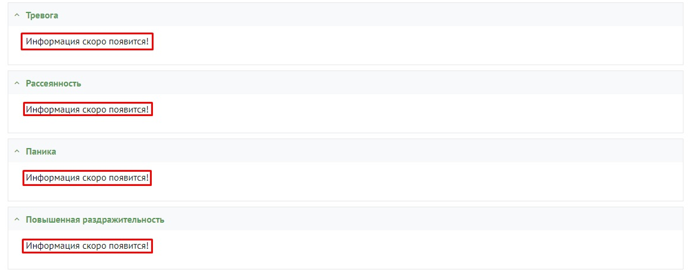
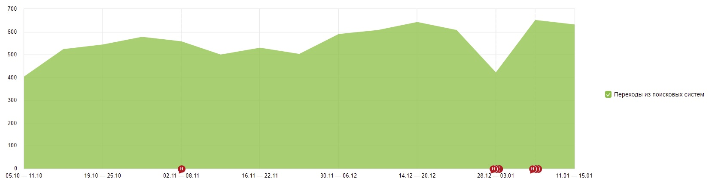

О проекте
В сентябре 2020 года, к нам обратился владелец ставропольской клиники СанТерра. Продвижением их сайта длительное время занималась компания, которая разработала сайт, но особых достижений не было. Позиции выросли на старте сайта, и сохранялись на том же уровне.
Проведя аудит, было отмечено, что сайтом не занимались в плане наполнения, а контент, размещенный на сайте в качестве «заглушки», оставался на протяжении двух лет. Какие работы по SEO-продвижению выполнялись после релиза сайта, было неясно. Полный список выявленных ошибок получился довольно скромным:
- Ошибки в заполнении файла robots.txt.
- Файл sitemap.xml содержал ссылки на страницы сайта версии http (при наличии действующего сертификата ssl), и мусорные страницы, которые не следовало индексировать.
- На многих страницах сайта мета-тег description наследовался с главной страницы услуг.
- Тег Title на ряде страниц был некорректным и больше походил на спам, чем на привлекательный заголовок, побуждающий к посещению сайта.
- Названия некоторых страниц не давали однозначного ответа, какой именно контент на них расположен.
- Тексты отсутствовали на ряде страниц.
- Отсутствовали страницы с описанием заболеваний и их симптомов.
- Меню не предоставляло доступа к подразделам — чтобы найти некоторые страницы с описанием услуг, нужно было очень постараться.
- Отсутствовали отзывы о врачах в детальной карточке специалиста.

Были определенные опасения, поскольку в последнее время очень часто можно увидеть упоминания об алгоритмах YM-YL в Google и YATI в Яндекс, которые регулируют ранжирование сайтов, относящихся к тематике здравоохранения. Согласно этим алгоритмам, чтобы занимать высокие позиции требуется определенный уровень экспертности автора и высокое качество контента. Глаза боятся, а руки делают. Мы взяли сайт в работу, внесли необходимые изменения и начали планомерную работу по наполнению сайта контентом. Статьи подбираются специалистом, компонуются, затем отправляются на рерайт. В итоге на выходе получается максимально качественный и уникальный контент, который в случае необходимости дополняется информацией до полного закрытия интента запроса.
Первые результаты начали появляться уже через два месяца после старта работ, однако они были далеко не впечатляющими (увеличение трафика примерно на 10-20%).
